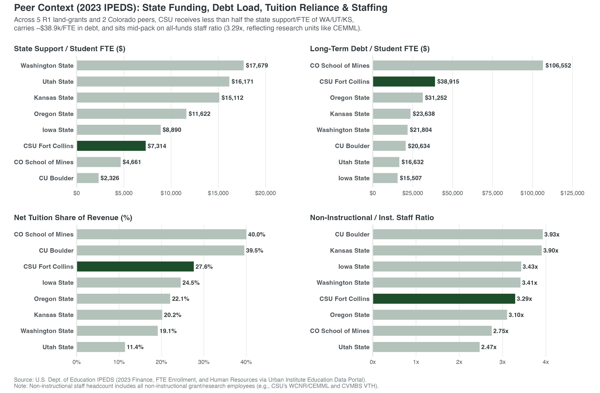

| IPEDS FY23 Cross-Institution Benchmark Table | ||||||||
| Urban Institute IPEDS Harmonized Finance & HR Panel (2023 Reporting Cycle) | ||||||||
| Institution | Student FTE | State Support / FTE | Long-Term Debt / FTE | Total Debt | Net Tuition % Rev | Tuition Discount Rate | Research % Exp | Non-Inst / Inst Staff |
|---|---|---|---|---|---|---|---|---|
| CSU Fort Collins | 28,744 | $7,314 | $38,915 | $1,118.6M | 27.6% | 20.0% | 21.7% | 3.29x |
| CO School of Mines | 7,128 | $4,661 | $106,552 | $759.5M | 40.0% | 24.6% | 22.7% | 2.75x |
| Oregon State | 30,394 | $11,622 | $31,252 | $949.9M | 22.1% | 29.4% | 17.4% | 3.10x |
| Kansas State | 17,184 | $15,112 | $23,638 | $406.2M | 20.2% | 21.4% | 27.1% | 3.90x |
| Washington State | 25,104 | $17,679 | $21,804 | $547.4M | 19.1% | 34.1% | 22.0% | 3.41x |
| CU Boulder | 37,248 | $2,326 | $20,634 | $768.6M | 39.5% | 15.6% | 27.0% | 3.93x |
| Utah State | 22,671 | $16,171 | $16,632 | $377.1M | 11.4% | 42.8% | 28.6% | 2.47x |
| Iowa State | 28,245 | $8,890 | $15,507 | $438.0M | 24.5% | 30.4% | 16.2% | 3.43x |
| Source: Urban Institute Education Data Portal IPEDS Finance & HR CSVs (2015–2023), peer_benchmarks_2023.csv. | ||||||||
Trust, Source Verification & Peer Benchmarks
Distinguishing Valid Governance Concerns from Unverified Claims—and Comparing CSU Across 7 Land-Grant & Colorado Peers
Addressing a multi-year budget adjustment constructively requires two forms of honesty at once: recognizing where leadership decisions genuinely strained campus trust, and checking circulating claims carefully against primary public records.
1. Governance & Trust Concerns vs. Source Verification
Documented Leadership & Communication Concerns
- Former President Amy Parsons’ Resignation & $1.1M Transition Settlement (
Oct. 28 – Nov. 5, 2026): On Oct. 28, 2026, CSU announced Parsons’ resignation effective Dec. 31, 2026 (prior contract ran to Jan. 2028 at $600k/yr; Rick Miranda serves as Interim President beginning Jan. 1, 2027), alongside a $1.1M transition payout and mutual non-disparagement clause criticized by AAUP-CSU on Nov. 5 (aaupcsu.org). While $1.1M one-time equals 1.7% of one year’s $66.0M FY28 operating projection, non-disclosure terms around executive departures understandably weaken confidence when units across campus have just absorbed 160.58 permanent FTE reductions. - Football Coaching Contract & Public Optics (
$2.4MBase): Head Football Coach Jim Mora Jr.’s 5-year contract (opening at $2.4M base pay and escalating to $2.8M), alongside post-game remarks following a 73–7 loss at Washington State (“These are people here that don’t know how to win”), drew sharp campus criticism during an E&G hiring slowdown—though reducing that salary alone would resolve<4%of Ledger A.
Source Verification Note: Title IX Investigator Jeffrey Lamoureaux
Fact-Check Note Ahead of Late-2026 Meetings: Recent campus commentary has cited the hiring of Title IX investigator Jeffrey Lamoureaux, pointing to prior San Francisco Chronicle reporting as evidence of vetting lapses at CSU. Primary records audited for this project do not show an employment link between Jeffrey Lamoureaux and CSU Fort Collins.
- What San Francisco Chronicle / UC Berkeley IRP actually reported: Former Burbank Police Sgt. Jeffrey Lamoureaux left law enforcement under a California “clean-record agreement” and later worked as a Title IX investigator at the University of Nebraska-Lincoln (UNL), Eastern Washington University, Appalachian State, Goodwin University, Auburn University, and the University of San Francisco. Colorado appeared in that reporting because state legislators enacted statutory restrictions on similar police clean-record agreements—not due to CSU employment.
- Why accuracy helps campus dialogue: Relying strictly on verified Colorado public records—such as the $1.1M non-disparagement payout, capital debt trajectories ($1.33B System debt), and FY22–FY25 E&G hiring patterns (
Table 128)—keeps discussions focused on verifiable institutional facts rather than disputable personnel claims.
2. How CSU Compares Across Colorado & Land-Grant R1 Peers (IPEDS FY23)

Three comparative patterns emerge from IPEDS FY23:
- Colorado State Support Is Tight Relative to Out-of-State Land-Grants: At $7,314 in state appropriations and grants per student FTE, CSU receives roughly half the per-student state support of Washington State ($17,679/FTE), Utah State ($16,171/FTE), and Kansas State ($15,112/FTE)—while still receiving more than 3× CU Boulder ($2,326/FTE). All three Colorado institutions rely heavily on tuition revenue (
27.6%of current revenue at CSU;39.5%at CU Boulder;40.0%at Mines). - CSU Carried Comparatively High Long-Term Debt Per FTE ($38,915/FTE): Among comprehensive R1 land-grants in the peer group, CSU’s $38,915/FTE (
$1,118.6MFY23 IPEDS debt) exceeds Oregon State ($31,252/FTE), Kansas State ($23,638/FTE), Washington State ($21,804/FTE), CU Boulder ($20,634/FTE), Utah State ($16,632/FTE), and Iowa State ($15,507/FTE), trailing only specialized Colorado School of Mines ($106,552/FTE). - CSU’s All-Funds Staff Ratio (3.29x) Sits Mid-Pack: CU Boulder (
3.93x), Kansas State (3.90x), Iowa State (3.43x), and Washington State (3.41x) all report higher non-instructional-to-instructional IPEDS headcount ratios than CSU (3.29x). That context underscores why looking specifically at E&G-only Central VP trends since FY22—rather than all-funds totals containing CEMML/CIRA research staff—provides a fairer benchmark.
3. Constructive Questions Ahead of the FY28 Hybrid RCM Transition
In their Oct. 26, 2026 memo (alongside Faculty Fellows Rob Mitchell and Jennifer Martin), campus leadership noted transparently: “Changing the budget model will not by itself close a budget shortfall, nor does it produce new funding.” With FY27 serving as the Parallel Year ahead of July 1, 2027 implementation, shared governance, deans, and administration have practical opportunities to focus on the right ledgers:
- Clarify Post-FY22 E&G Central VP Hiring (
864.8FTE =62.1%of E&G AP): Review which portions of the+326E&G Admin Pro positions added between FY22 and FY25 sit in central administrative offices versus student-success, compliance, or college operations—explicitly separating grant-funded WCNR/CEMML and Engineering/CIRA roles. - Co-Design Transparent FY28 Hybrid RCM Rules: Publish clear parameters ahead of Dec. 3–4 BOG review covering “off-the-top” central assessments (
XA Debt Service $31.86M,CSU Spur $15.00M), instructional credit-hour weights, and subvention mechanisms for foundational disciplines. - Align Long-Term Athletics & Debt Planning With E&G Capacity: Evaluate multi-year glide paths for CSU’s ~$15.6M net Athletics operating support (
B2 $17.15MFY26 base) alongside cautious policies on any new bonded or internal treasury debt while general funds remain tight. - Track Net Tuition Yield Alongside Enrollment Headcounts: As campus recruits both resident and non-resident cohorts (
-9.7%Dom NR UG in Fall 2026), measure net revenue per seat net of institutional discounting ($174.1MSystem allowance /21.3%discount rate) so enrollment strategies strengthen net margins.